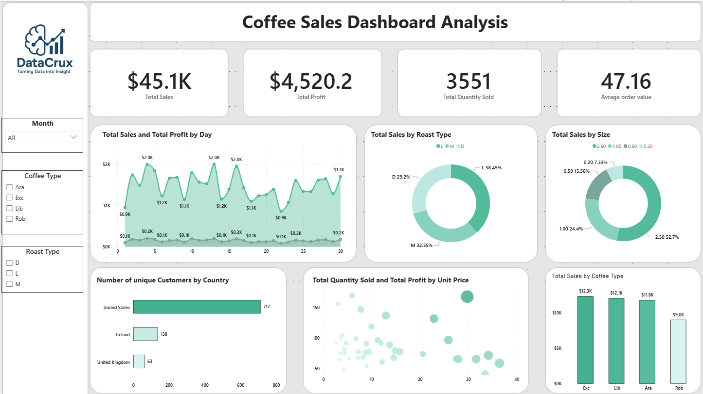
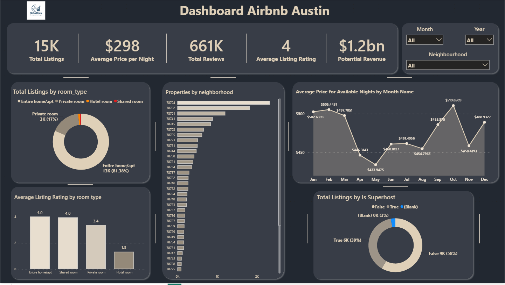
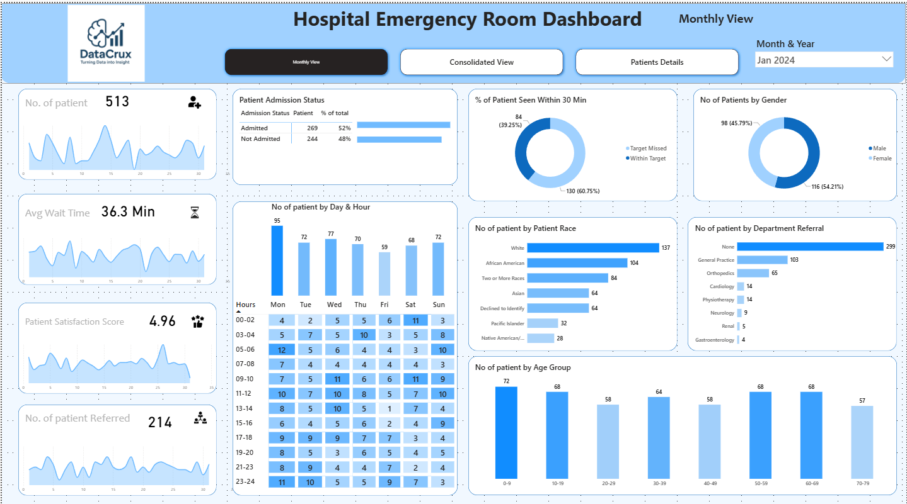
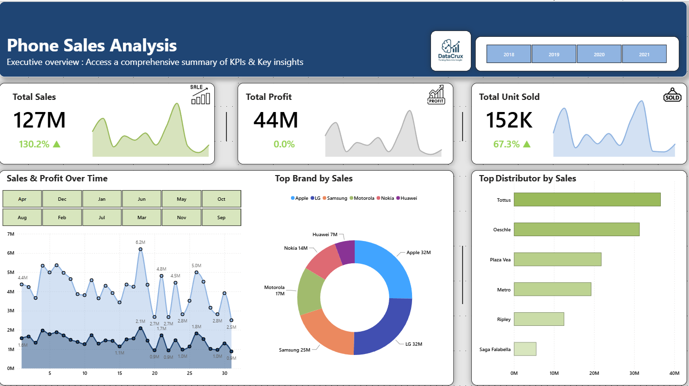
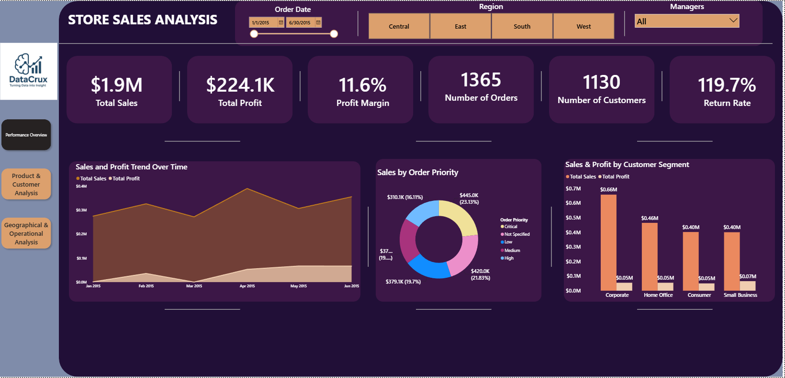
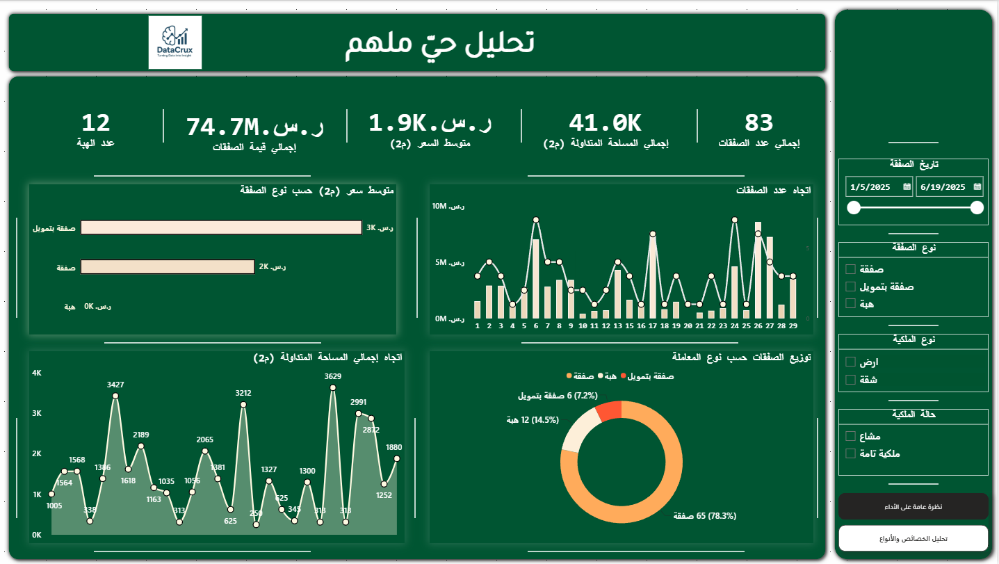
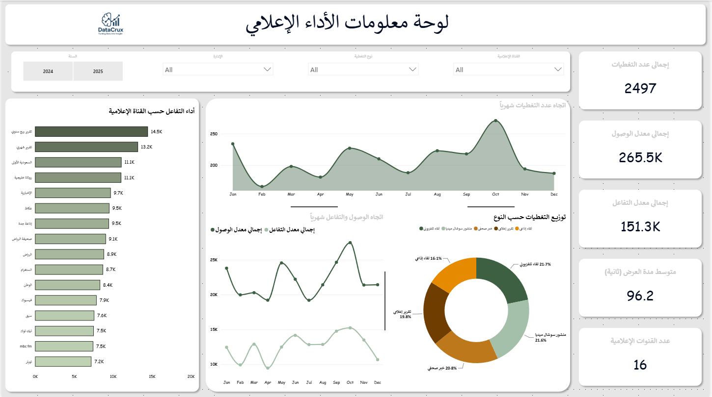

تحليل البيانات
تنظيف البيانات، الاستكشاف الإحصائي، بناء خطوط ETL، واستخراج مؤشرات الأعمال.
PythonPandasSQLExcel
عالم بيانات ومحلل بيانات
أحوّل البيانات الخام إلى نماذج تنبؤية ولوحات معلومات ورؤى واضحة تساعد على اتخاذ قرارات أفضل. أعمل عند تقاطع تعلم الآلة، تحليل الأعمال، ومعالجة اللغة العربية.
01 / نبذة عني
لدي خبرة في تنفيذ حلول علم بيانات وتحليل أعمال لقطاعات العقارات والمالية والجهات الحكومية والإعلام. أعمل من فهم المشكلة وتنظيف البيانات، مرورًا بالتحليل والنمذجة، وصولًا إلى لوحة معلومات أو تطبيق يمكن استخدامه.
أتابع دراسة الماجستير في علوم الحاسوب، ويركز بحثي الحالي على تحليل مشاعر النصوص باللهجة السعودية باستخدام نماذج المحولات.
عرض السيرة الذاتية02 / الأدوات والخبرات
من الاستكشاف وتهيئة البيانات إلى بناء النماذج والتقارير التفاعلية.
تنظيف البيانات، الاستكشاف الإحصائي، بناء خطوط ETL، واستخراج مؤشرات الأعمال.
تصميم تقارير تفاعلية تجعل الاتجاهات والأداء والفرص واضحة لأصحاب القرار.
نماذج التنبؤ والتصنيف، هندسة الخصائص، التقييم، وتفسير النتائج.
تحليل النصوص العربية، البحث الدلالي، أنظمة RAG، ونماذج المحولات.
03 / مشاريع مختارة
نماذج تنبؤية، ذكاء اصطناعي عربي، وتحليلات أعمال. افتح أي مشروع لقراءة الهدف والمنهج والنتيجة.
نموذج لتقدير سعر السيارة اعتمادًا على مواصفاتها وحالتها، مع تفسير العوامل المؤثرة في كل توقع.
تقدير أسعار عادلة وسريعة للسيارات المستعملة.
هندسة خصائص الماركة والطراز والمسافة المقطوعة والحالة والسنة، ثم مقارنة النماذج وضبط XGBoost وتفسير التوقعات باستخدام SHAP.
تطبيق Streamlit للاستدلال الفوري وعرض التفسير.
نظام لاسترجاع المعلومات من وثائق تنظيمية عربية والإجابة عبر البحث الدلالي وأدوات متعددة.
تسهيل الوصول إلى الإجابات داخل الوثائق التنظيمية العربية.
تضمين النصوص بنموذج multilingual-e5-large، تخزين المتجهات في ChromaDB، وتوجيه الاستعلامات إلى البحث الدلالي أو SQL أو الويب.
واجهة عربية باتجاه RTL مبنية باستخدام Streamlit.
نظام يجمع بين توقع كمية الهدر وتصنيف شدته لتوجيه فرق التشغيل إلى الإجراء المناسب.
تحديد حجم الهدر المتوقع ومستوى خطورته وأسبابه.
بيانات تضم أكثر من 13 ألف سجل، ونموذجا انحدار وتصنيف مع مصفوفة قرار 3×3 تربط الشدة بالسبب.
توصيات تشغيلية آلية وتطبيق تفاعلي.
تجميع الإيرادات والمصروفات وهوامش الربح والتدفق النقدي في شاشة واحدة واضحة للإدارة.
توفير رؤية مالية موحدة ومحدثة لصناع القرار.
نمذجة بيانات SQL وتجميع مسارات الإيراد والمصروفات، ثم بناء مقاييس وتقارير Power BI تفاعلية.
لوحة تنفيذية لمتابعة مؤشرات الأداء والهوامش والتدفق النقدي.
تحليل اتجاهات السعر لكل متر مربع وترتيب الأحياء لتحديد فرص الاستثمار.
فهم فروق الأسعار بين المناطق والعوامل المؤثرة في قيم العقارات.
استعلامات SQL متقدمة وتحليل Python لبيانات المواقع والمساحات وتاريخ الأسعار، مع عرض النتائج في Power BI.
ترتيب للمناطق الاستثمارية ومؤشرات سعر المتر المربع.
بحث ماجستير لدراسة تصنيف مشاعر مراجعات المنتجات السعودية باستخدام نماذج المحولات العربية.
فهم أثر خصائص اللهجة السعودية على دقة تصنيف مشاعر المستهلكين.
ضبط AraBERT وMARBERT وCAMeLBERT على مجموعات مراجعات منتجات سعودية، ودراسة انتقال التعلم بين اللهجات.
مقارنة منهجية للنماذج وأنماط المشاعر عبر فئات المنتجات.

عرض الصورة كاملة ↗لوحة لمتابعة المبيعات والربح والمنتجات والعملاء حسب نوع القهوة والتحميص والحجم والدولة.
فهم أداء منتجات القهوة وأنماط شراء العملاء.
مؤشرات إجمالية، اتجاهات يومية، توزيع أنواع القهوة والتحميص، وتحليل العملاء حسب الدولة مع مرشحات تفاعلية.

عرض الصورة كاملة ↗لوحة تستكشف حجم السوق والأسعار والتقييمات وأنواع الإقامة والأحياء والاتجاهات الموسمية.
دعم المضيفين والمستثمرين في فهم سوق الإيجار قصير الأجل.
مقارنة أنواع الغرف والأحياء والتقييمات والأسعار الشهرية، مع التصفية حسب الشهر والسنة والحي.

عرض الصورة كاملة ↗ثلاث صفحات لمتابعة تدفق المرضى ووقت الانتظار والرضا والإحالات والحضور حسب اليوم والساعة.
إظهار مؤشرات تشغيل الطوارئ لدعم تخطيط الموارد وتحسين تجربة المرضى.
مؤشرات المرضى والانتظار والقبول، وتحليل توزيع الزيارات حسب الوقت والخصائص الديموغرافية، مع مرشحات التاريخ.

عرض الصورة كاملة ↗لوحة تنفيذية للمبيعات والربح والوحدات، مع تحليل الاتجاهات اليومية والعلامات التجارية والموزعين.
تحديد العلامات التجارية والموزعين الأعلى أداءً.
اتجاهات المبيعات والربح عبر الزمن، وحصة العلامات التجارية وأداء الموزعين مع مرشحات السنة والشهر.

عرض الصورة كاملة ↗ثلاثة عروض للأداء العام، المنتجات والعملاء، والتوزيع الجغرافي والعمليات.
توضيح مصادر الربح وفرص تحسين المنتجات والتوزيع والشحن.
مؤشرات الأداء والهوامش، مقارنة فئات المنتجات والعملاء، وتحليل المدن وأنماط الشحن ومعدل المرتجعات.

عرض الصورة كاملة ↗تقرير عقاري بصفحتين: نظرة عامة على الأداء وتحليل الخصائص وأنواع المعاملات والملكية.
متابعة حركة الصفقات وتوزيعها حسب خصائص العقار والمعاملة.
اتجاه عدد الصفقات والمساحة المتداولة، وتحليل فئات المساحة ونوع الصفقة والملكية والصفقات الهامة.

عرض الصورة كاملة ↗تحليل التغطيات الإعلامية والوصول والتفاعل عبر القنوات والأشهر والإدارات وأنواع التغطية.
مقارنة أداء القنوات الإعلامية وتتبع اتجاه التغطيات والوصول والتفاعل.
مؤشرات إجمالية، اتجاهات شهرية، توزيع حسب نوع التغطية، ومقارنة القنوات مع مرشحات السنة والإدارة والنوع والقناة.
الأرقام والنتائج مأخوذة من سيرتي الذاتية وملفات مشاريع Power BI. صور مشاريع Power BI هي لقطات أصلية من التقارير؛ الرسوم الأخرى توضيحية.
04 / طريقة العمل
تحديد القرار المطلوب ومقاييس النجاح والبيانات المتاحة.
التحقق من الجودة، الاستكشاف، وهندسة الخصائص المناسبة.
نموذج تنبؤي أو لوحة معلومات أو خط بيانات قابل للاستخدام.
تفسير النتائج وتحويلها إلى توصيات قابلة للتنفيذ.
05 / تواصل
يسعدني مناقشة مشاريع التحليل، لوحات المعلومات، وتطبيقات تعلم الآلة واللغة العربية.
راسلني عبر البريد